Somewhat-modern Python
In this post I present my latest project template for Python projects, copier-pdm, based on the great Copier.
This parodic title was inspired by the "Hypermodern Python" article series by Claudio Jolowicz. Indeed, my Python development setup has parts that could considered modern by some, and old-school by others, so I found it funny to call it "more-or-less modern".
Introduction¤
As Claudio points it out in his article series, the Python landscape has changed considerably this last decade, and even more so these last few years. Python is now one of the most used languages in the world, and we see a plethora of new projects coming up to life. Code formatters, linters, test runners, task runners, documentation generators, project managers, wheel builders and installers, dependency resolvers, CLI/TUI/API frameworks, static/runtime type checkers. It can be hard for new-comers to choose their tools and libraries, or even learn about their existence. Seasoned developers might see a lot of these new projects as new "toys" that will just be unmaintained one year from now. Sometimes, they are right. But I think it's important to keep an open-mind and try new fancy projects, even if they're not widely accepted/used by the community of Python developers (experts and beginners), or even create your own tools and libraries. Sometimes, it pays. Sometimes, you fill a niche and get progressive adoption.
That's what I've been doing for a few years now. I'm far from being the most experienced Python developer, but I've grown to know the ecosytem quite well. I have my opinions, which not everybody will share. And I know (almost) exactly what I need as a Python developer. This is why I have created my own template for Python projects. It is very opinionated, and makes use of some of my own tools which are probably completely unknown to the community.
This post presents all the tools and libraries used in my template, categorized and ordered from general aspects of project templating and Python projects, to very specific things like "what do I want to see in the standard output of my task runner":
- Project templating: creating a template, generating projects, updating generated projects.
- Project management: metadata, dependencies, building and publishing wheels.
- Running tasks: setting the project up, running quality checks or tests suites, etc.
- Documentation: writing docs/docstrings, automatic code reference, publishing.
- Continuous Integration: DRY configuration between local and CI
- Workflow: Git commit messages, automatic changelog generation, new releases.
Project templating: Copier¤

Copier is a project templating tool.
It is able to generate a project from a given template,
prompting the user for some information, and injecting
this information into the generated files.
A template is basically a git repository with
templated files and folders,
as well as a configuration file for Copier.
Files ending with a .jinja extension will be rendered
using Jinja.
The Jinja context will be populated with the user's answers.
% copier gh:pawamoy/copier-pdm test-project
ð¤ Your project name
Test Project
ð¤ Your project description
This is just a test.
ð¤ Your full name
Timothée Mazzucotelli
ð¤ Your email
dev@pawamoy.fr
ð¤ Your username (e.g. on GitHub)
pawamoy
...
A template is very helpful when you create lots of new project: you avoid writing boilerplate code again and again.
Now, Copier does not just allow to generate projects. It is also able to update generated projects when newer versions of templates are released.
Story time: from Cookiecutter to Copier
Most of Python developers probably know about CookieCutter. It's a project templating tool that allows to write language-and-technology-agnostic templates. Templates are basically a folder, with files and other folders in it, whose names and contents can be "templated", i.e. use variables, conditions and loops. The templating language used is Jinja2, another well known project.
Despite its popularity, CookieCutter lacks a crucial feature: upstream-to-downstream updates. Let say you create your perfect Python project template with CookieCutter. You use it to generate 5 or 6 projects with it. With time, these 5 or 6 projects will start to diverge, and there's no integrated way into CookieCutter to prevent it. You will apply clever things from project N back into the template itself, but there's no way to apply these same modifications onto the other projects. It effectively makes your template "single-use" or "one-time" only, because once a project is generated, there's no way to keep it in sync with the template evolutions themselves. And this is something users are trying to achieve, see cookiecutter#784 and cookiecutter#1004.
In fact, there is a way, and it's called Cruft
(other alternatives exist but I feel like Cruft is the most popular).
But Cruft is a wrapper around CookieCutter so it can only do so much to improve it.
It does not have access to CookieCutter's internals, and therefore cannot provide
a completely integrated, native project-updating experience (at least in my opinion,
I will let you try it out if you are using CookieCutter, and let me know if I'm wrong  ).
).
This is where Copier shines: that feature is built-in, by design. One of Copier's main goals is to make it easy to update your already-generated projects when your template evolves. It means that, even when you manage dozens of projects that were generated using a single template, you can easily, almost automatically keep them in sync, while still allowing small differences here and there. I won't go into the details of how the update mechanism works (git operations, basically), but you can see a diagram and explanation here.
To quote Copier's docs:
Although Copier was born as a code scaffolding tool, it is today a code lifecycle management tool. This makes it somehow unique.
Creating a template¤
To create a template using Copier, you have to know
the basics of Jinja.
Then you can simply read the Quickstart section of Copier's docs.
This will give you an idea of what is possible. If you already know and use CookieCutter, you'll see that it's similar:
you can put the templated stuff into a subdirectory of your git repository.
One small difference is that the context is available globally rather than under the cookiecutter key.
A minimal Copier template could look like this:
ð template/
âââ ð project/
â âââ ð README.md.jinja
âââ ð copier.yml
_subdirectory: project
project_name:
help: What is your project name?
# {{ project_name }}
Generating a project¤
To get a feel of what it's like to generate a project from a real-life template,
you can try to generate a project using my copier-pdm template.
Just run this in a terminal:
pip install --user pipx
pipx run copier gh:pawamoy/copier-pdm newproject
An important thing to know is that you should immediately stage and commit every generated file and folder, even if you want to delete some of them, because this will help later during updates.
cd newproject
git init
git add -A
git commit -m "feat: Generate initial project"
# now modify and commit as much as you want!
Updating generated projects¤
Let say you just changed something in your template.
All you need to be able to update your projects generated from this template,
is to push a new tag, then go into your generated project(s) and run copier -f update.
Copier will automatically apply the modifications to your project,
while keeping the project's own changes intact.
You can review the changes in your favorite tool (VSCode "Source Control" tab, git add -p, etc.),
stage and commit. That's it!
You can see all my "template upgrade" commits on GitHub with this search: "chore: Template upgrade user:pawamoy".
For more information on the update process, see how the update works.
Project management: PDM¤

Now that we have templates and can generate projects, we must choose a project management tool.
Traditional setups include setuptools' setup.py file, with some MANIFEST.in and requirements.txt files.
We can spice things up with pip-tools or other alternatives.
We can use modern, minimalist tools like Flit.
Or we can use full-fledge, all-in-one managers like Hatch,
Poetry, or PDM.
Story time: from Poetry to PDM
When the community came to learn about Poetry, it was a revolution: finally a tool
that removed all the boilerplate and complexity around packaging and publishing Python projects.
Everything was declared in pyproject.toml, and nothing else.
You could manage your dependencies, virtualenvs being handled for you (great for beginners),
you could build wheels and source distributions and publish them to PyPI with simple commands
like poetry build and poetry publish. Poetry seriously improved the UX around project management
and packaging in the Python ecosystem. I'll forever be thankful for that.
But Poetry also took some annoying design decisions. They looked good at first, but were a huge hindrance for projects, depending on their environment. To make it short, I'm referring to this, "Allow user to override PyPI URL without modifying pyproject.toml", and other things like the inconsistencies in how to configure things / how the configuration is used, and the lack of option to disable SSL verification. I was maybe a bit thown-off by the complete absence of answer to my request for guidance in the PR I sent (working change, just hard to test), but I really can't blame them for this because they were literally assaulted with issues and PRs.
Then I learned about PDM. It had all the good things Poetry had, and it removed
the previously mentioned pain points, namely: it was able to read pip's configuration.
It made using private indexes so easy: setup pip's index-url and trusted-host and you're done.
Your own configuration does not contaminate other users through pyproject.toml
(note: PDM 2.0 doesn't read pip's configuration anymore, but you can still configure
your index outside of pyproject.toml).
Even more interesting, it offered support for the (draft) PEP 582. Since then, it gained several other outstanding features, like a pnpm-like cache, a powerful plugin system, development dependencies groups, etc. @noirbizarre posted a very nice comment about PDM, summarizing all these wonderful features. @frostming is doing a fantastic job at maintaining PDM.
One of the main interests in using PDM is its ability to use
PEP 582's __pypackages__ installation folders.
No more virtualenvs! Combined with its package cache, dependencies are installed
insanely fast, and your environment won't break when you update your Python versions.
Obviously, it also drastically reduces the disk-space taken by your dependencies.
If you still want to use virtualenvs, PDM natively supports them as well, and can manage them for you, just like Poetry.
Installing and using PDM¤
My recommandation to install PDM is to use pipx:
python -m pip install --user pipx
pipx install pdm
I also like to enable PEP 582 support globally
(docs),
so that python is always aware of packages installed in a __pypackages__ folder:
pdm --pep582 >> ~/.bash_profile
The commands written to .bash_profile simply add a subfolder of PDM to the PYTHONPATH
environment variable. This folder contains a sitecustomize.py module,
which Python executes upon starting. The module in turn will add subfolders
of __pypackages__ (when it exists) to sys.path. The end result is
that you can run python and import dependencies normally,
or even call modules with python -m thing,
without having to use pdm run python .... One limitation
is that you still won't be able to call installed script directly,
for example pytest, like in an activated virtual environment.
For this, you'll have to run pdm run pytest (but remember that
if packages support it, you can run python -m pytest instead).
Declaring your project metadata¤
PDM reads project metadata in pyproject.toml.
It relies on PEP 517 (build system)
and PEP 621 (project metadata):
[build-system]
requires = ["pdm-pep517"]
build-backend = "pdm.pep517.api"
[project]
name = "package-name"
description = "The package description."
version = "0.1.0"
authors = [{name = "Timothée Mazzucotelli", email = "dev@pawamoy.fr"}]
license = "ISC"
readme = "README.md"
requires-python = ">=3.7"
keywords = ["some", "keywords"]
classifiers = [
"Development Status :: 4 - Beta",
"Intended Audience :: Developers",
"Programming Language :: Python",
"Programming Language :: Python :: 3",
"Programming Language :: Python :: 3 :: Only",
"Typing :: Typed",
]
This example hardcodes the version but you can fetch it from SCM (Git tags).
Projects using the src layout are supported:
[tool.pdm.build]
package-dir = "src"
Declaring your dependencies¤
Dependencies and optional dependencies can be declared as specified by PEP 621:
[project]
dependencies = [
"griffe>0.22",
]
[project.optional-dependencies]
test = [
"pytest>=7.1",
]
Note that this is not specific to PDM. Any tool that relies on PEP 621 will be able to read these dependencies.
Development dependencies however are not specified by PEP 621, so the next part is specific to PDM and will not work with other dependencies managers. Development dependencies can be separated into multiple groups, just like optional dependencies:
[tool.pdm.dev-dependencies]
docs = [
"mkdocs>=1.3",
"mkdocs-material>=7.3",
"mkdocstrings[python]>=0.18",
"markdown-exec>=0.5",
]
tests = [
"pytest>=6.2",
"pytest-cov>=3.0",
"pytest-randomly>=3.10",
"pytest-xdist>=2.4",
]
When installing dependencies, you can then select all of them, or specific groups only:
pdm install # installs everything
pdm install --prod # installs production dependencies only
pdm install -G docs # installs production dependencies and docs group
pdm install --no-default -G docs -G tests # installs docs and tests groups only
Building and publishing wheels¤
To build source and wheel distributions, simply run pdm build.
To publish them, simply run pdm publish! Or use Twine.
It is possible to customize the build process, see PDM's docs for more info.
Task runner: duty¤
At this point we are able to declare and install dependencies and development dependencies. We will want to use some of them to run quality analysis and execute test suites.
PDM supports npm-like scripts, but I don't use them because I find them not expressive/powerful enough. I prefer writing my tasks with the full power of Python. That makes them more verbose, but way more flexible, and you can use code from dependencies directly instead of calling subprocesses.
I tried many task runners and eventually ended up writing my own: duty.
Story time: from tox to Invoke to duty, and why not nox
A few years ago, when I was writing Django-apps, I was using tox to test my apps on multiple Django versions. I was happy with it, but found it a bit slow when running jobs on a P*D-sized matrix (Python versions, Django versions). Fortunately detox was able to run tox envs in parallel.
At some point I stopped writing Django apps, and started searching an alternative to tox with a lighter output, because I really don't like seeing walls of text when a single line is enough (test passed? just print ok).
I started playing with Invoke, but quickly had issues with it, notably in Windows runs on GitHub. I also felt limited in that I couldn't run Python code directly, only subprocesses. I tried to implement such a feature in Invoke, but couldn't manage to do it.
I also played with Nox, but found it too slow as well, even when reusing virtualenvs. And the console output was again too heavy for my taste. Now that PDM supports Nox, I should definitely give it another try though!
In the end, I wrote my own task runner, duty, which is heavily inspired by Invoke.
With duty, tasks are declared by default in a duties.py file at the root of the repository.
You import the decorator, and decorate functions with it:
from duty import duty
@duty
def lint(ctx):
ctx.run("flake8 src")
You can then run decorated function (duties) on the command line: duty lint.
The ctx (for context) argument is injected by duty when running the task.
Its run method accepts strings (shell commands), list of strings, and Python callables.
Yes, you can run callables directly, no need for subprocesses.
Depending on the library, it will be easy or hard to replace the subprocess
with a direct call:
from duty import duty
@duty
def lint(ctx):
from flake8.main.cli import main as flake8
ctx.run(flake8, args=["src"])
@duty
def docs(ctx):
from mkdocs.__main__ import cli as mkdocs
cli(["build"])
I urge Python developers to expose their CLI entrypoint outside of __main__,
and to make it accept command line parameters. Otherwise we have
to import from __main__, and/or patch sys.argv, which is ugly.
Library first, CLI second!
In the worst cases, you'll have to rebuild part of the CLI logic by copy/pasting code to make it work. For these cases, maybe it's easier to just run a subprocess.
By default, duty will print the command that runs, and update the line with a check mark if it returns a success value (0 for subprocess, 0, None, True or truthy value for callables). If the command fails (non-zero, False or exception), duty will also print the captured output. Bye bye walls of text, hello very sexy output!
Success:

Failure:
You can also output tap.
Refer to duty's documentation for many more examples.
Project setup, running tasks¤
When I clone one of my projects, I want to be able to set it up
in one command. Setting it up is basically installing the dependencies.
With PDM, that command would be pdm install.
But that installs dependencies for only one Python version,
and since I'm not using tox or nox, I need to install
dependencies for every Python version I want to support.
for py in 3.7 3.8 3.9 3.10 3.11; do
pdm use -f python$py
pdm install
done
Again, I'm not using tox or nox, and I also need to be able to run some tasks on all supported Python versions. Typically tests, but quality analysis as well, because it needs to pass whatever the Python version is.
for py in 3.7 3.8 3.9 3.10 3.11; do
pdm use -f python$py
pdm run duty test
done
The end result is that I have two Bash scripts,
setup.sh and
multirun.sh
in a scripts folder. Bash is usually available, even on Windows thanks
to Git-for-Windows. However I don't want
to run these scripts with bash scripts/setup.sh or ./scripts/multirun.sh duty test.
It's way too long to type. So I decided to also write a Makefile.
Make is not easily available on Windows, so I lose a bit of cross-platformness,
but it's just so convenient on GNU/Linux systems.
Checkout my Makefile on GitHub.
With this Makefile, I can simply type make setup after cloning a project.
This action will try to install pipx if it's not available,
and then it will try to install PDM with pipx if it's not available.
Finally, it will run pdm install for a defined set of Python versions
(at the time of writing: 3.7 up to 3.11).
I can also type make format, or make check, or make test,
and depending on the action, it will run it only once, using
the Python version currently selected through PDM, or run it
on all supported Python versions.
If my duties (tasks) accept arguments, I can pass them
from the command line: make release version=1.0.0,
or make test match="this or that".
Once I fixed something or added a new feature, and wrote tests for it, I can format my code, check its quality, run the tests, generate a coverage HTML report, generate a changelog entry, commit everything, build and publish a new release, and then publish docs with a single line:
make format check test coverage changelog release version=2.13.1
No time is lost installing dependencies for each task since I pre-installed my dependencies for every Python version, and all the output is unified and minimal, showing details only if something went wrong.
Here's a real run that published dependenpy v3.3.2 on pypi.org:

The next sections will present each action (format, check, test, etc.) in details.
Quality analysis¤
I typically split quality analysis in two: code quality and type-checking.
For static typing analysis, I use mypy.

@duty
def check_types(ctx):
ctx.run("mypy --config-file config/mypy.ini src", title="Type-checking")
My configuration file is very basic and not very strict. It can probably be improved a lot.
[mypy]
ignore_missing_imports = true
warn_unused_ignores = true
show_error_codes = true
$ make check-types
> Currently selected Python version: python3.10
> pdm run duty check-types (python3.7)
â Type-checking
> pdm run duty check-types (python3.8)
â Type-checking
> pdm run duty check-types (python3.9)
â Type-checking
> pdm run duty check-types (python3.10)
â Type-checking
> pdm run duty check-types (python3.11)
â Type-checking
> Restored previous Python version: python3.10
For code quality analysis, I use Flake8 with a battery of plugins:
- darglint: docstrings linter that checks (missing) parameters, returns and exceptions in docstrings
- flake8-bandit: plugin that integrates Bandit
- flake8-black: plugin that checks if Black would make changes
- flake8-bugbear: "finds likely bugs and design problems in your program"
- flake8-builtins: checks that you don't shadow builtins with variables or parameters
- flake8-comprehensions: helps you write better list/set/dict comprehensions
- flake8-docstrings: plugin that integrates pydocstyle
- flake8-pytest-style: checks common style issues or inconsistencies with pytest-based tests
- flake8-string-format: checks formatted-strings and f-strings for errors
- flake8-tidy-imports: I use this one to forbid relative imports
- flake8-variables-names: helps to write more readable variables names
- pep8-naming: famous PEP8 checks
- wps-light: a lighter fork (no dependencies) of wemake-python-styleguide, a very strict and opinionated plugin for Flake8. You'll see that I disable a good part of its warnigns in my template, because they feel too cumbersome to me. The rest of the warnings can be annoying, but are very valuable to me: they definitely force you to write more readable and maintainable code.
@duty
def check_quality(ctx, files="src tests"):
ctx.run(f"flake8 --config=config/flake8.ini {files}", title="Checking code quality")
[flake8]
exclude = fixtures,site
max-line-length = 132
docstring-convention = google
ban-relative-imports = true
ignore =
...
I truncated the file because it is a bit long, please check it out on GitHub.
$ make check-quality
> Currently selected Python version: python3.10
> pdm run duty check-types (python3.7)
â Checking code quality
> pdm run duty check-types (python3.8)
â Checking code quality
> pdm run duty check-types (python3.9)
â Checking code quality
> pdm run duty check-types (python3.10)
â Checking code quality
> pdm run duty check-types (python3.11)
â Checking code quality
> Restored previous Python version: python3.10
Code formatters¤
Code formatting is done in three steps:
@duty
def format(ctx):
ctx.run(
"autoflake -ir --exclude tests/fixtures --remove-all-unused-imports src/ tests/",
title="Removing unused imports",
)
ctx.run("isort src/ tests/", title="Ordering imports")
ctx.run("black src/ tests/", title="Formatting code")
[tool.black]
line-length = 120
exclude = "tests/fixtures"
[tool.isort]
line_length = 120
not_skip = "__init__.py"
multi_line_output = 3
force_single_line = false
balanced_wrapping = true
default_section = "THIRDPARTY"
known_first_party = "markdown_exec"
include_trailing_comma = true
$ make format
â Removing unused imports
â Ordering imports
â Formatting code
Idea: use ssort
I'm also looking at ssort, but it probably needs some enhancements before we're able to use it.
Security analysis¤
Security analysis is partly with safety, which queries a curated PyUP.io database to show dependencies that are vulnerable.
The duty is a bit long here, because I try to ensure safety's modules are not patched by malicious packages installed in the current environment. Rebuilding the CLI logic also allows us to lighten up or even rework the output.
@duty
def check_dependencies(ctx):
# undo possible patching
# see https://github.com/pyupio/safety/issues/348
for module in sys.modules: # noqa: WPS528
if module.startswith("safety.") or module == "safety":
del sys.modules[module] # noqa: WPS420
importlib.invalidate_caches()
# reload original, unpatched safety
from safety.formatter import SafetyFormatter
from safety.safety import calculate_remediations
from safety.safety import check as safety_check
from safety.util import read_requirements
# retrieve the list of dependencies
requirements = ctx.run(
["pdm", "export", "-f", "requirements", "--without-hashes"],
title="Exporting dependencies as requirements",
allow_overrides=False,
)
# check using safety as a library
def safety():
packages = list(read_requirements(StringIO(requirements)))
vulns, _ = safety_check(packages=packages, ignore_vulns="")
output_report = SafetyFormatter("text").render_vulnerabilities(
announcements=[],
vulnerabilities=vulns,
remediations=[],
full=True,
packages=packages,
)
if vulns:
print(output_report)
return False
return True
ctx.run(safety, title="Checking dependencies")
$ make check-dependencies
â Exporting dependencies as requirements
â Checking dependencies (1)
> safety()
+==============================================================================+
/$$$$$$ /$$
/$$__ $$ | $$
/$$$$$$$ /$$$$$$ | $$ \__//$$$$$$ /$$$$$$ /$$ /$$
/$$_____/ |____ $$| $$$$ /$$__ $$|_ $$_/ | $$ | $$
| $$$$$$ /$$$$$$$| $$_/ | $$$$$$$$ | $$ | $$ | $$
\____ $$ /$$__ $$| $$ | $$_____/ | $$ /$$| $$ | $$
/$$$$$$$/| $$$$$$$| $$ | $$$$$$$ | $$$$/| $$$$$$$
|_______/ \_______/|__/ \_______/ \___/ \____ $$
/$$ | $$
| $$$$$$/
by pyup.io \______/
+==============================================================================+
REPORT
Safety v2.1.1 is scanning for Vulnerabilities...
Scanning dependencies in your environment:
-> temp_file
Using non-commercial database
Found and scanned 118 packages
Timestamp 2022-09-04 14:18:55
3 vulnerabilities found
0 vulnerabilities ignored
+==============================================================================+
VULNERABILITIES FOUND
+==============================================================================+
-> Vulnerability found in numpy version 1.21.1
Vulnerability ID: 44716
Affected spec: <1.22.0
ADVISORY: Numpy 1.22.0 includes a fix for CVE-2021-41496: Buffer
overflow in the array_from_pyobj function of fortranobject.c, which allows
attackers to conduct a Denial of Service attacks by carefully constructing an
array with negative values. NOTE: The vendor does not agree this is a
vulnerability; the negative dimensions can only be created by an already
privileged user (or internally).https://github.com/numpy/numpy/issues/19000
CVE-2021-41496
For more information, please visit
https://pyup.io/vulnerabilities/CVE-2021-41496/44716/
-> Vulnerability found in numpy version 1.21.1
Vulnerability ID: 44717
Affected spec: <1.22.0
ADVISORY: Numpy 1.22.0 includes a fix for CVE-2021-34141: An
incomplete string comparison in the numpy.core component in NumPy before
1.22.0 allows attackers to trigger slightly incorrect copying by constructing
specific string objects. NOTE: the vendor states that this reported code
behavior is "completely harmless."https://github.com/numpy/numpy/issues/18993
CVE-2021-34141
For more information, please visit
https://pyup.io/vulnerabilities/CVE-2021-34141/44717/
-> Vulnerability found in numpy version 1.21.1
Vulnerability ID: 44715
Affected spec: <1.22.2
ADVISORY: Numpy 1.22.2 includes a fix for CVE-2021-41495: Null
Pointer Dereference vulnerability exists in numpy.sort in NumPy in the
PyArray_DescrNew function due to missing return-value validation, which
allows attackers to conduct DoS attacks by repetitively creating sort arrays.
NOTE: While correct that validation is missing, an error can only occur due
to an exhaustion of memory. If the user can exhaust memory, they are already
privileged. Further, it should be practically impossible to construct an
attack which can target the memory exhaustion to occur at exactly this
place.https://github.com/numpy/numpy/issues/19038
CVE-2021-41495
For more information, please visit
https://pyup.io/vulnerabilities/CVE-2021-41495/44715/
Scan was completed. 3 vulnerabilities were found.
+==============================================================================+
make: *** [Makefile:49: check-dependencies] Error 1
I'm considering using/creating tooling around the OSV database instead.
The code quality analysis, presented earlier, also checks the code for security risks using Bandit.
Test suite¤
Tests are written and executed using pytest and plugins:
- sometimes pytest-asyncio, to test asynchronous code
- pytest-cov, which uses Coverage.py to build code coverage reports
- pytest-randomly, to randomize the order of tests, to make sure each test is independant from the others
- pytest-xdist, to run tests in parallel and therefore speed up the test runs
- sometimes hypothesis, to test huge ranges of input values
@duty(silent=True)
def coverage(ctx):
ctx.run("coverage combine", nofail=True)
ctx.run("coverage report --rcfile=config/coverage.ini", capture=False)
ctx.run("coverage html --rcfile=config/coverage.ini")
@duty
def test(ctx, match: str = ""):
py_version = f"{sys.version_info.major}{sys.version_info.minor}"
os.environ["COVERAGE_FILE"] = f".coverage.{py_version}"
ctx.run(
["pytest", "-c", "config/pytest.ini", "-n", "auto", "-k", match, "tests"],
title="Running tests",
)
[pytest]
norecursedirs =
.git
.tox
.env
dist
build
python_files =
test_*.py
*_test.py
tests.py
addopts =
--cov
--cov-config config/coverage.ini
testpaths =
tests
[coverage:run]
branch = true
parallel = true
source =
src/
tests/
[coverage:paths]
equivalent =
src/
__pypackages__/
[coverage:report]
precision = 2
omit =
src/*/__init__.py
src/*/__main__.py
tests/__init__.py
$ make test coverage
> Currently selected Python version: python3.10
> pdm run duty test (python3.7)
â Running tests
> pdm run duty test (python3.8)
â Running tests
> pdm run duty test (python3.9)
â Running tests
> pdm run duty test (python3.10)
â Running tests
> pdm run duty test (python3.11)
â Running tests
> Restored previous Python version: python3.10
Name Stmts Miss Branch BrPart Cover
-------------------------------------------------------------------------------
src/markdown_exec/formatters/base.py 26 2 6 2 87.50%
src/markdown_exec/formatters/bash.py 12 6 0 0 50.00%
src/markdown_exec/formatters/console.py 33 23 10 0 23.26%
src/markdown_exec/formatters/markdown.py 4 1 2 0 50.00%
src/markdown_exec/formatters/pycon.py 33 23 10 0 23.26%
src/markdown_exec/formatters/python.py 24 0 6 0 100.00%
src/markdown_exec/formatters/sh.py 12 0 0 0 100.00%
src/markdown_exec/formatters/tree.py 43 9 14 2 70.18%
src/markdown_exec/logger.py 20 4 4 0 75.00%
src/markdown_exec/mkdocs_plugin.py 25 25 6 0 0.00%
src/markdown_exec/rendering.py 82 32 38 5 54.17%
tests/conftest.py 7 0 2 0 100.00%
tests/test_python.py 17 0 0 0 100.00%
tests/test_shell.py 12 0 0 0 100.00%
tests/test_tree.py 5 0 0 0 100.00%
tests/test_validator.py 6 0 0 0 100.00%
-------------------------------------------------------------------------------
TOTAL 361 125 98 9 59.04%
The coverage action also generates an HTML report that can later be integrated into the docs.
Idea: use ward
I'm also looking at ward, but it feels a bit hard to leave pytest and its huge community.
Documentation: MkDocs¤
To write documentation for your project, I suggest using MkDocs. The well-known alternative is of course Sphinx. Sphinx is battle-tested and more targeted towards Python project documentation, but I've found MkDocs to be easier to work with.
Combined to the great Material for MkDocs theme, it gives you a beautiful and responsive website for your documentation pages, or even for your blog. And combined to the mkdocstrings plugin, you can auto-generate documentation for your Python API (modules, functions, classes, methods, attributes, etc.).
Story time: from Sphinx to MkDocs
A few years ago (around 2020), I bumped into the Pydantic project (again). I had already seen it before, mainly interested in its settings configuration ability that could replace most of the logic in my Django app django-appsettings. This time, when I landed on its docs pages, I thought: "wow, this looks nice". Then, a bit later, FastAPI exploded in our faces, and I thought again: "hey, looks familiar, and I love it!". So I looked around and saw that it used MkDocs and a theme called "Material for MkDocs".
I started migrating my projects to MkDocs and Material for MkDocs from Sphinx, because it looked nicer than the ReadTheDocs theme, and was far easier to use. Indeed, for the six previous years I had been using Sphinx for my projects documentation, and I never quite enjoyed writing docs with it. This was before the MyST parser or recommonmark (which I used a bit later), so I was writing my documentation in reStructuredText. I constantly had to check the syntax of rST and the Sphinx docs to achieve basic things. In particular, I wanted to have ToC (Table of Contents) entries in the sidebar for every documented module, class or function auto-generated with Sphinx's autodoc extension. I posted a question on StackOverflow and then found a feature request on Sphinx's bugtracker: the answer was "it's not possible (yet)".
So I thought, hey, why not bring that in MkDocs instead of Sphinx?
At the time, the only viable option for autodoc in MkDocs was
Tom Christie's mkautodoc.
Tom expressed his lack of capacity to work on the project,
and I had an itch to scratch, so I decided to create my own MkDocs plugin
for auto-documentation. This is how mkdocstrings was born.
Tom's code has been very helpful at the beginning of the project
(mkdocstrings' ::: syntax actually comes from mkautodoc),
so thanks Tom!
Today we have a thriving MkDocs community and ecosystem, and I think it gave a nice push to the Sphinx community which, to me, seemed to stagnate a bit.
With MkDocs, you write your documentation in Markdown files,
inside a docs folder. Then you configure MkDocs in mkdocs.yml,
at the root of your repository:
ð ./
âââ ð docs/
â âââ ð index.md
âââ ð mkdocs.yml
site_name: My project documentation
theme:
name: material
plugins:
- search
- mkdocstrings
With mkdocstrings, you can inject documentation of an object
using the ::: identifier syntax. For example, if you have a project like this:
ð ./
âââ ð project/
âââ ð __init__.py
âââ ð module.py
...and this class in module.py:
"""This module is not very useful."""
class AlmostEmptyClass:
"""This class doesn't allow to do a lot of things."""
def __init__(self, something: str) -> None:
"""Initialize an almost empty instance.
Parameters:
something: Pass something to the instance.
"""
self.thing: str = something
...you can inject documentation for your class like so,
in a Markdown file, for example index.md:
::: project.module.AlmostEmptyClass
Or you could inject the whole module docs, recursively:
::: project.module
There's even a recipe to automatically document all your modules.
If you want to learn in details how to build documentation with MkDocs, Material for MkDocs, and mkdocstrings, I can't recommend this guide enough, from Real Python: Build Your Python Project Documentation With MkDocs.
Building the docs locally is as easy as running mkdocs build,
and deploying them onto GitHub Pages
is just a matter of running mkdocs gh-deploy.
The copier-pdm template provides these actions/duties to check, build and deploy your docs:
make docs: build the docs locally, in thesitedirectorymake docs-serve: serve the docs locally, at http://localhost:8000make docs-deploy: deploy your docs on GitHub Pagesmake check-docs: build docs in strict mode, failing at any warning or error
Continuous Integration: GitHub Actions¤
GitHub Actions allows to do continuous integration on most major operating systems: Linux, MacOS and Windows, which is very nice when you build a cross-platform tool or library.
To follow the DRY principle, what is executed in CI can be executed locally,
and reciprocally. Locally, we use duty to run the tasks,
so we do the same in CI:
name: ci
jobs:
quality:
runs-on: ubuntu-latest
steps:
- name: Checkout
uses: actions/checkout@v2
- name: Set up PDM
uses: pdm-project/setup-pdm@v2.6 # (1)
with:
python-version: "3.8"
- name: Resolving dependencies
run: pdm lock
- name: Install dependencies
run: pdm install -G duty -G docs -G quality -G typing -G security # (2)
- name: Check if the documentation builds correctly
run: pdm run duty check-docs # (3)
- name: Check the code quality
run: pdm run duty check-quality
- name: Check if the code is correctly typed
run: pdm run duty check-types
- name: Check for vulnerabilities in dependencies
run: pdm run duty check-dependencies
tests:
strategy:
matrix:
os:
- ubuntu-latest
- macos-latest
- windows-latest
python-version:
- "3.7"
- "3.8"
- "3.9"
- "3.10"
- "3.11-dev"
runs-on: ${{ matrix.os }}
steps:
- name: Checkout
uses: actions/checkout@v2
- name: Set up PDM
uses: pdm-project/setup-pdm@v2.6
with:
python-version: ${{ matrix.python-version }}
- name: Install dependencies
run: pdm install --no-editable -G duty -G tests # (4)
- name: Run the test suite
run: pdm run duty test # (5)
- The PDM project provides this very convenient
setup-pdmGitHub action. - We install production dependencies and every necessary development dependency.
- And we run each check sequentially: docs, quality, types, security. That should be fast enough.
- We only install production dependencies and tests development dependencies. We tell PDM not to use an editable installation method, to be as close as a production environment as possible.
- We run the test suite.
That's it. No special cases for CI. Whats runs up there
can run down here with make check test.
Workflow: integrating everything together¤
Now let see the typical workflow with all these tools integrated together.
If you don't already have a local clone of your project, you clone it, enter it and install dependencies:
git clone ...
cd ...
make setup
Then you can start working on a bugfix, feature or documentation improvement.
git switch -c fix-some-bug
For example, you add a test to your test suite to assert that it fails with the current code, and then run the test suite:
# add a failing test, then
make test
It fails successfully on every Python version. You can now fix the code itself, and run the test suite again to make sure it's fixed for every Python version you support:
# fix the code, then
make test
The test passes on every version, great. Make sure the code is well-formatted and there's no code smells:
make format check
# fix any code smell
If you wrote or updated documentation, serve the site locally to check if everything renders correctly:
make docs-serve
# go to localhost:8000
You are ready to commit. At some point you will want to release
a new version, and therefore add a new entry in the changelog.
You will be able to auto-generate such an entry thanks to
git-changelog,
but only if you follow the
Angular commit-message convention,
prefixing commit messages with a type like feat or fix.
git commit -am "fix: Fix broken feature X"
After some commits (and/or merged pull requests), and if you are ready to release a new version, you can update your changelog and see if the suggestion new version matches your expectations:
make changelog
# review CHANGELOG.md
The new version is based on your latest Git tag.
With a major version of 0, fixes and code refactoring
will increment the patch version by 1, and features will increment
the minor version by 1. Breaking changes (detected using the body
of the commit message) won't increment the major version.
With a major version higher than 0, detected breaking changes will increment the major version.
Changes since the last release will be nicely organized in sections such as "Features" and "Bug fixes".
The changelog should only be updated when you are ready to publish a new release. Then, simply build and publish a new release of your project, providing the same version that was added to the changelog (you don't need to commit it):
make release version=1.2.3
# check out your new release on pypi.org!
The changelog and release parts are explained a bit more in the Changelog and Releases sections of the template's documentation.
Conclusion¤
What I like about this template and the projects generated with it, is that they are pretty much self-contained. You have everything you need at the tips of your fingers, and don't have to rely on particular online services to perform specific actions. Don't like GitHub Actions? Switch to something else! You'll always be able to run checks and tests locally, or publish a new release or a documentation update from your local machine.
I hope you enjoyed the article, or at least learned one or two things. In any case, don't hesitate to leave a comment: I'll gladly fix any mistake I made, or elaborate if something isn't clear enough.